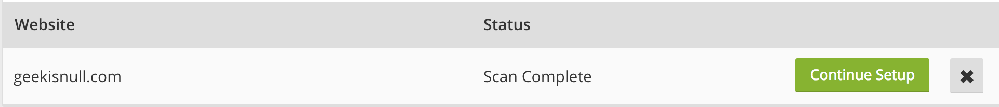

免费CloudFlare SSL配置
现在好多网站都转成了https，外加小程序强制https，这小网站算凑凑热闹。
网上查阅些过来人的教学博客，发现大家都用CloudFlare的免费SSL，我的网站本来是基于Gitpages搭建的，虽然Gitpages提供了Https的设置(相关官方文档)，但要用该功能的话必须是github.io的域名。我用自己的breadykid.com域名，所以需要折腾一下。
Step1:在CF添加域名，获取提供的NameServer
注册CloudFlare账号，创建站点获得CloudFlare提供的DNS。
- 添加站点，扫描域名
输入个人域名开始扫描
扫描完毕
 - 添加DNS Records
添加完成 - 按照step2去所在的域名服务商那修改DNS
- 选择版本，穷困的我当然选免费的啦～～～
- 检查网站是否激活
网站已经处于激活状态了 - 配置选项,flexible为了访客到cf的过程是加密的，而cf到gitpages不加密
以上，完成后等待CloudFlare添加的网站为激活状态，使用https打开个人网站。
Step2:修改域名DNS服务器
去自己的域名服务商那边修改DNS，我在万网买的，以下是万网界面。
Step3:修改Hexo的配置文件
修改站点配置文件_config.yml
1
2url: https://www.yoursite.com # with the https protocol
enforce_ssl: www.yoursite.com # without any protocol至此，网站已经可以用https访问，但必须手动输入https前缀才行，这里我们将其改为强制https。*
修改主题配置文件，以下为Next主题配置文件，themes/next/layout/_layout.swig，在头部加上：
1
2
3
4
5<script type="text/javascript">
var host = "yoursite.com";
if ((host == window.location.host) && (window.location.protocol != "https:"))
window.location.protocol = "https";
</script>
至此，网站跳转https全部实现。